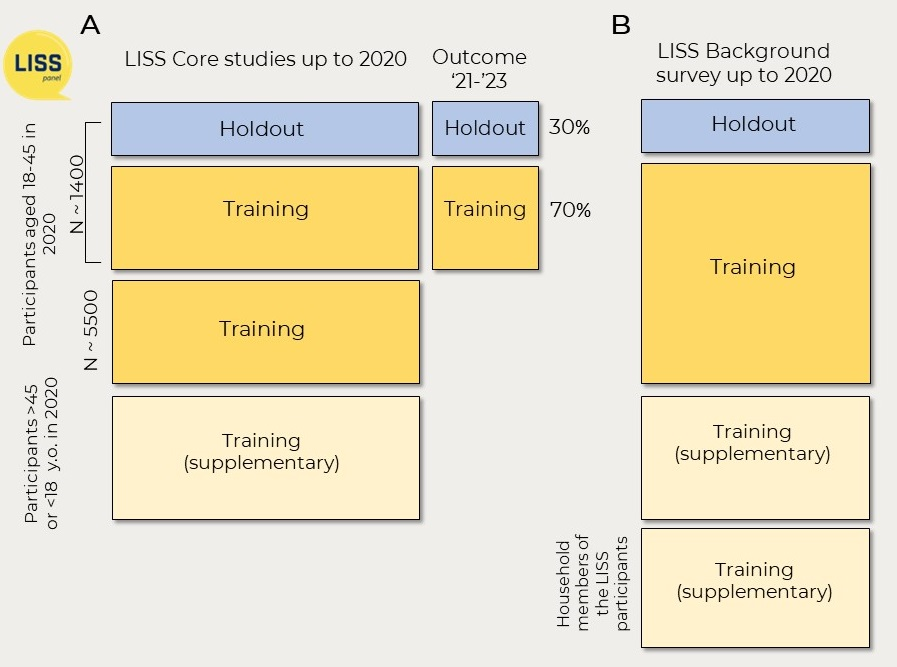
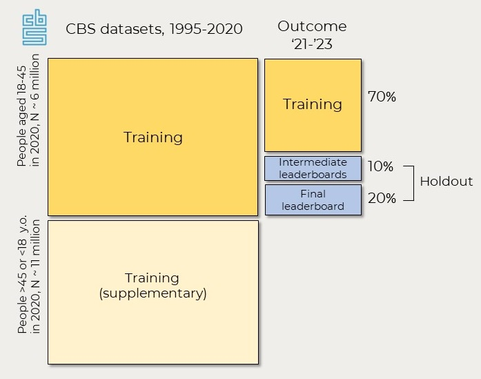

Data
PreFer uses two datasets: the LISS panel and Dutch population register data.
This challenge uses two data sources: survey data from the LISS panel and linked register data from Statistics Netherlands (Bakker et al., 2014), or CBS.
LISS datasets
The LISS panel is based on a traditional probability sample drawn from the Dutch population register by Statistics Netherlands and is managed by the non-profit research institute Centerdata. The LISS panel started in 2007 when approximately 5000 households comprising 8000 individuals of 16 years and older were recruited.
Members of the panel participate in ten longitudinal surveys (or Core Study modules) on ten different topics (family, health, religion, social integration and leisure, work and education, personality, politics and values, assets, income, housing). Most of these surveys are conducted annually, and some biannually. Each time, each survey measures the same set of variables.
Another source of data on the LISS panel is the Background survey. It is filled out by a household’s contact person when the household joins the panel and is updated monthly. It collects basic socio-demographic information about the household and all of its members (including those who are not LISS panel members and do not participate in the Core surveys).
We made several datasets based on these sources of data. See details about all the datasets based on the LISS panel data [here]/posts/posts/2024-03-20-prefer-datasets.qmd){target=“_blank”}.
The main training dataset includes people aged 18-45 years old in 2020, who participated at least in one Core study survey in 2007-2020. Overall, there are ~6900 people in this group. However, most of them have dropped out of the LISS panel by 2021-2023, and because of that the outcome - getting a new child in 2021-2023 - is available only for ~1400 of them.
We splitted all individuals for whom the outcome is available into a training set and holdout (test) set. Because some respondents come from the same households, we first splitted the households into train and holdout to avoid data leakage. See more details on the train-test split in the paper).
All the datasets will be provided to the participants of the data challenge after sighing the user statement.
Read further:
- More detailed description of all LISS datasets provided for participants of the challenge
- Some examples of how to make use of these different LISS datasets - Tips about how to use codebooks for these LISS datasets
- More guides that help work with LISS data.

CBS dataset
The linked register data comes from population registries of the Netherlands collected by Statistics Netherlands (CBS) (we will refer to this source as CBS data). Participants will have access to a selection of all CBS datasets. These datasets include information about marriages and partnerships, children, education, employment, income and assets, neighborhood characteristics and more, as well as social networks for the whole Dutch population van der Laan et al., 2023. Most of these datasets cover the period from 1995 to 2023, but only the data up to 2020 can be used for training.
Based on these selected datasets, a base preprocessed dataset (mostly with the data from 2020) will be prepared and made available to the participants as a starter package along with a codebook in Dutch and English. This preprocessed file includes only our target group – Dutch residents aged 18-45 in 2020 (more than 6 million people). Participants will be able to calculate additional variables based on the full longitudinal datasets and also add characteristics of their networks, using the network datasets for the linkage. The scripts with examples of how to preprocess the network datasets and calculate variables about the structure and composition of one’s networks will be provided. To allow adding the characteristics of the network and because in this phase participants will submit predictions (not only the code), only the outcome variable for the test set is held out (see the figure below).
Additional CBS datasets (not initially available to the participants of the challenge) can be requested throughout the challenge with a short justification of why the dataset is requested. The relevant CBS datasets can be searched using the CBS micro-data catalogue and ODISSEI portal. Data from external sources (not included in the CBS datasets) that can be linked to groups of individuals can also be uploaded if approved by CBS – for example, welfare policies by municipality.
NB: because the access to the CBS data is governed by strict rules and regulations in relation to data protection and privacy, only a limited number of participants (10-20 teams, one person per team), selected to participate in tracks 1-2 of Phase 2, will get access to the CBS data provided that they pass security checks and get approved by CBS. For those participants, the costs of access to the CBS datasets will be covered by ODISSEI. You can read about how teams will be selected to participate in Phase 2 and the conditions for accessing the CBS data here.
